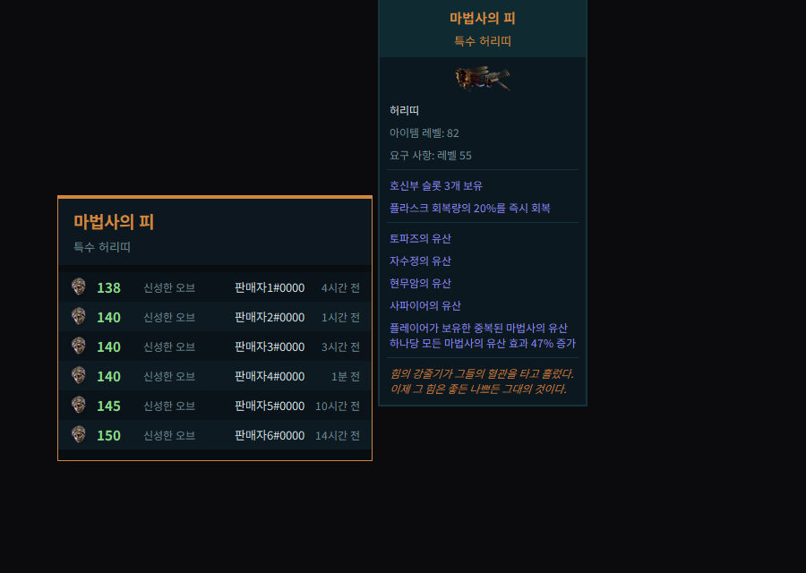
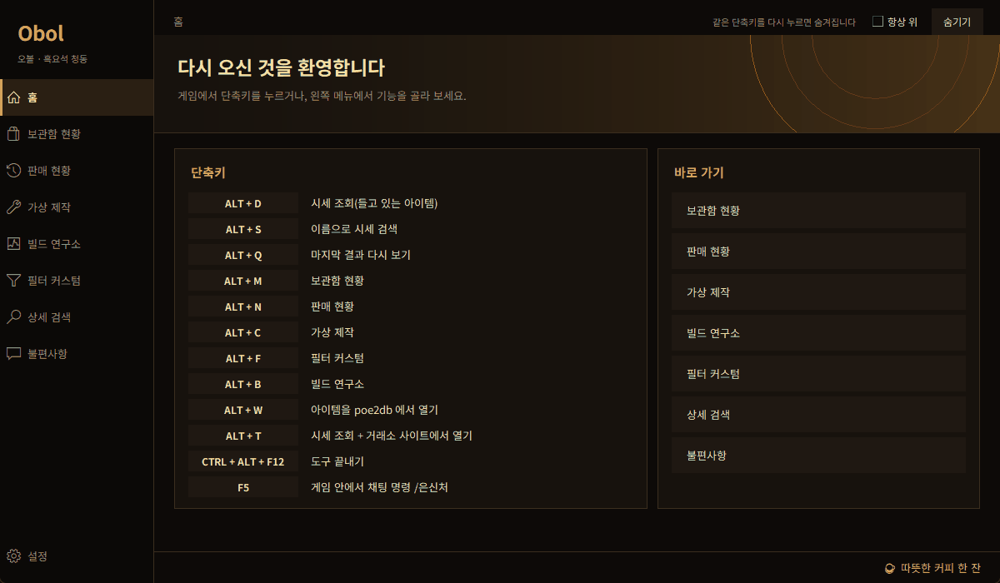

카카오 POE2를 위한 한글 시세 조회기 — 아이템에 마우스를 올리고 Alt+D
Korean (Kakao Games) server only. This tool does not support the global servers.
Obol 다운로드 (Windows) exe 파일 하나 · 설치 필요 없음 · 무료 · 항상 최신 버전이 받아집니다
Alt+D 시세 조회 — 매물 줄에 마우스를 올리면 오른쪽에 그 아이템의 옵션이 뜹니다(판매자 이름은 가렸습니다).| Alt+D | 시세 조회. 게임에서 아이템에 마우스를 올리고 누르면 한글 그대로 카카오 거래소의 비슷한 매물 가격이 게임 위에 뜹니다. 줄에 마우스를 올리면 그 매물의 옵션, 클릭하면 내 아이템과 나란히 비교합니다. |
| Alt+C | 가상 제작 — 접두·접미를 가중치대로 뽑아 보고, 만든 아이템의 비슷한 매물 시세까지 봅니다. |
| Alt+B | 빌드 연구소 — PoB 코드·pobb.in·poe.ninja 링크의 유명 빌드를 내 빌드와 견주고, 맞출 옵션을 골라 시세·제작으로 이어 갑니다. 액체 감정 찾기도 있습니다. |
| Alt+M / N | 보관함 현황(내 매물 총 가치), 판매 현황 |
| 그 밖에 | DPS 계산기, 필터 커스텀(Alt+F), 대기 화면, 스킨, 불편사항 보내기 |

꼭 읽어 주세요. Obol 은 비공식 팬 도구입니다. 게임에는 아이템 복사 키(Ctrl+C)만 보내고 게임 파일·메모리는 읽거나 고치지 않지만, Grinding Gear Games 나 카카오게임즈가 허용한다는 확인은 받지 못했습니다. 계정 안전을 보장하지 않으며 사용은 본인 책임입니다.
Get-FileHash Obol.exe 로 확인할 수도 있습니다.안전하다고 말씀드릴 수 없습니다. 위의 안내처럼 게임 파일·메모리를 건드리지 않고 키는 복사 한 번만 보내지만, 허용 여부는 확인되지 않았습니다. 판단은 본인 몫입니다.
카카오 거래소 호출 한도가 IP별이라 연속 조회하면 걸립니다. Obol 은 한도 직전에 멈추고 남은 시간을 알려 줍니다. 조회 간격을 두세요.
시세는 등록가라 장난 매물이 섞입니다(편차 경고가 뜹니다). 안 읽히면 관리자 권한 허용 여부와 전체 화면 독점 여부를 먼저 확인하고, 불편사항 보내기로 알려 주세요.
소스는 공개하지 않습니다. 접속처는 카카오 거래소, poe.ninja, poe2db, GitHub(업데이트 확인)이며, '불편사항 보내기'를 누를 때만 그 글을 개발자에게 전송합니다. 채팅 단축키(F5 등)를 설정하면 그 키에서 /명령어 한 줄을 입력합니다.
무료이고 기능 제한이 없습니다. 후원은 도구 안의 ☕ 따뜻한 커피 한 잔에서 자유롭게 하실 수 있습니다.